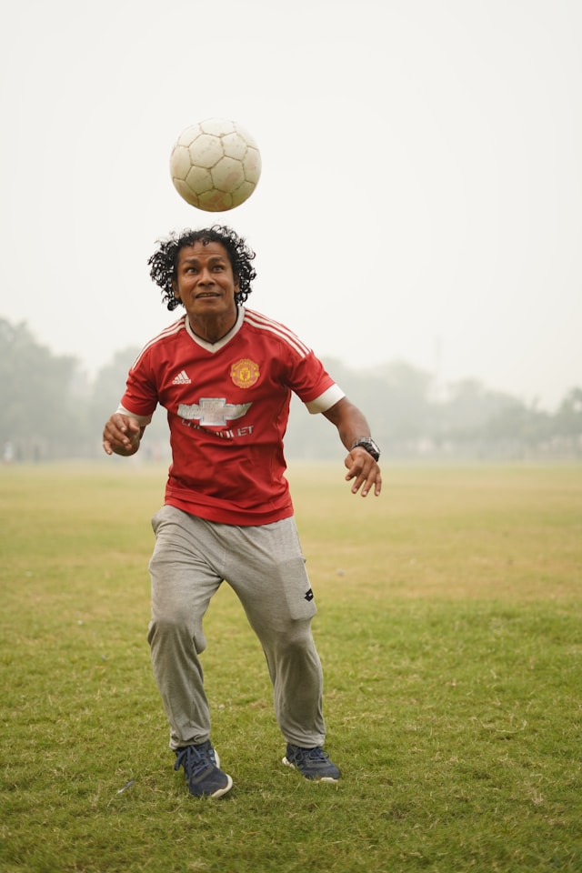
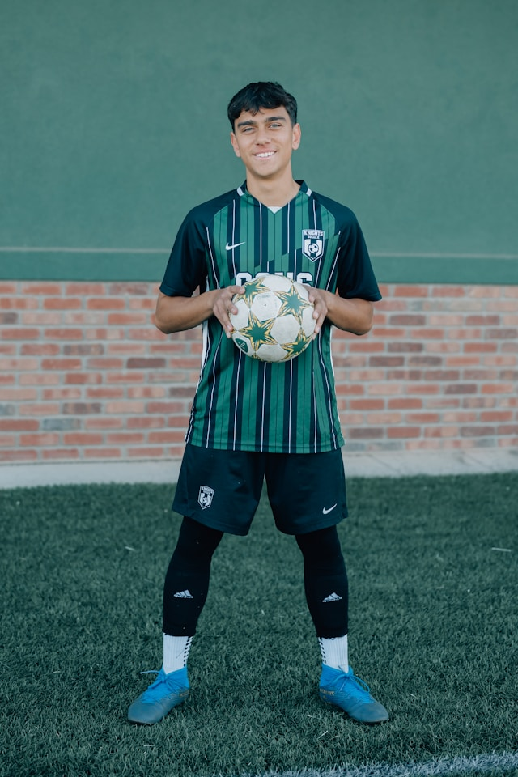
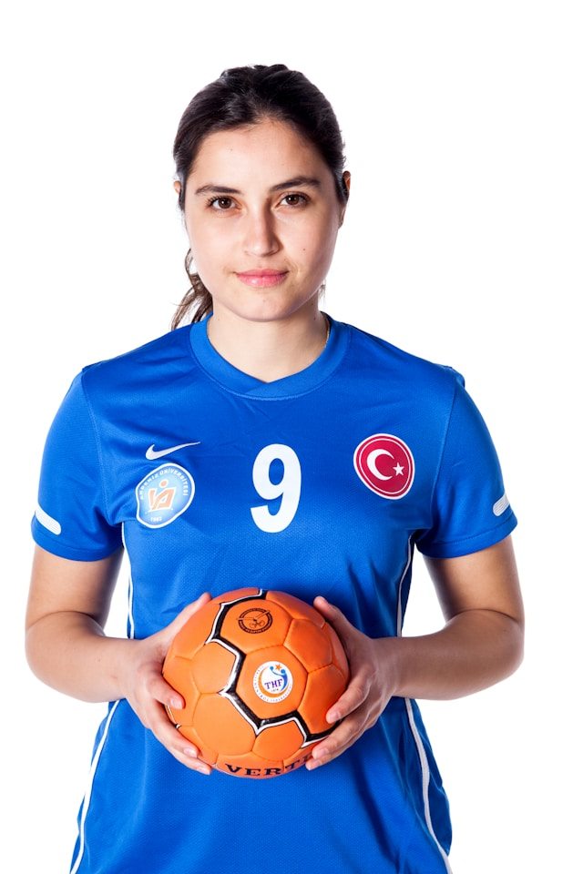

Coach Jose has over 15 years coaching experience within Soccer and Strength and Agility fields. He has coached youth athletes in the community that have obtained college offers to top collegiate programs. He is a fan of Manchester United and loves to spend time with his family.
Last updated 3 mins ago

Coach Alvarado has 10 years coaching experience. He previously coached the Men's Soccer team for the University of Southern Californio. Now, he has decided to come home to the city that helped him become the player and coach he is today. He has made it his mission to give back to the community and help our young athletes obtain the necessary skills needed to earn college scholarships to top programs.
Last updated 3 mins ago

Coach Leslie has been the heart of the Cerritos Soccer Club for nearly a decade. A former collegiate player turned mentor, she’s dedicated to creating a supportive environment where every player feels valued. Her sessions blend skill-building with teamwork challenges, the fosters a healthy team building environment.
Last updated 3 mins ago